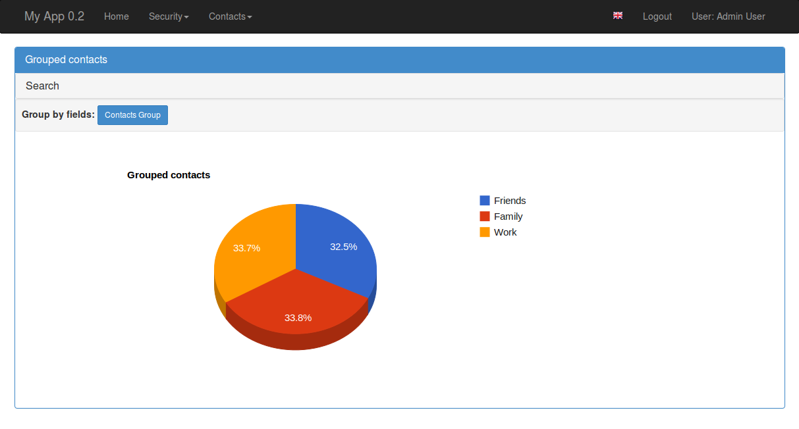
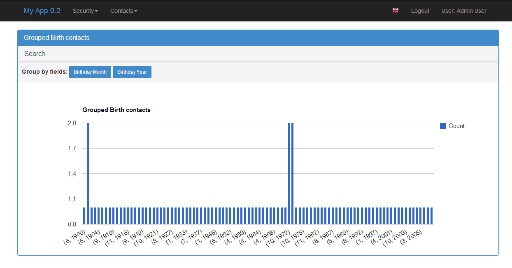
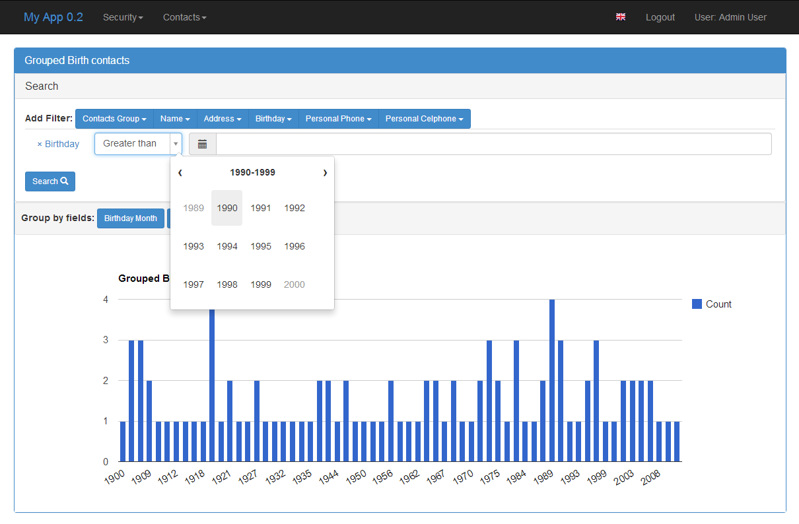

To implement views with google charts, use all inherited classes from BaseChartView, these are:
DirectChartView: Display direct data charts with multiple series, no group by is applied. GroupByChartView: Displays grouped data with multiple series. ChartView: (Deprecated) Display simple group by method charts. TimeChartView: (Deprecated) Displays simple group by month and year charts.
You can experiment with some examples on a live Demo (login has guest/welcome).
These charts can display multiple series, based on columns or methods defined on models. You can display multiple charts on the same view.
Let’s create a simple model first, the gold is to display a chart showing the unemployment evolution versus the percentage of the population with higher education, our model will be:
class CountryStats(Model):
id = Column(Integer, primary_key=True)
stat_date = Column(Date, nullable=True)
population = Column(Float)
unemployed_perc = Column(Float)
poor_perc = Column(Float)
college = Column(Float)
Suppose that the college field will have the total number of college students on some date. But the unemployed_perc field holds a percentage, we can’t draw a chart with these two together, we must create a function to calculate the college_perc:
def college_perc(self):
if self.population != 0:
return (self.college*100)/self.population
else:
return 0.0
Now we are ready to define our view:
from flask.ext.appbuilder.charts.views import DirectByChartView
from flask.ext.appbuilder.model.sqla.interface import SQLAInterface
class CountryDirectChartView(DirectByChartView):
datamodel = SQLAInterface(CountryStats)
chart_title = 'Direct Data Example'
definitions = [
{
'label': 'Unemployment',
'group': 'stat_date',
'series': ['unemployed_perc',
'college_perc']
}
]
This view definition will produce this:

The definitions property respects the following grammar:
definitions = [
{
'label': 'label for chart definition',
'group': '<COLNAME>'|'<MODEL FUNCNAME>',
'formatter': <FUNC FORMATTER FOR GROUP COL>,
'series': ['<COLNAME>'|'<MODEL FUNCNAME>',...]
}, ...
]
Where ‘label’ and ‘formatter’ are optional parameters. So on the same view you can have multiple direct chart definitions, like this:
from flask.ext.appbuilder.charts.views import DirectByChartView
from flask.ext.appbuilder.model.sqla.interface import SQLAInterface
class CountryDirectChartView(DirectByChartView):
datamodel = SQLAInterface(CountryStats)
chart_title = 'Direct Data Example'
definitions = [
{
'label': 'Unemployment',
'group': 'stat_date',
'series': ['unemployed_perc',
'college_perc']
},
{
'label': 'Poor',
'group': 'stat_date',
'series': ['poor_perc',
'college_perc']
}
]
Next register your view like this:
appbuilder.add_view(CountryDirectChartView, "Show Country Chart", icon="fa-dashboard", category="Statistics")
This kind of chart inherits from BaseChartView that has some properties that you can configure these are:
chart_title: The Title of the chart (can be used with babel of course). group_by_label: The label that will be displayed before the buttons for choosing the chart. chart_type: The chart type PieChart, ColumnChart or LineChart chart_3d: = True or false label like: ‘true’ width: The charts width height: The charts height
Additionally you can configure BaseModelView properties because BaseChartView is a child. The most interesting one is
base_filters: Defines the filters for data, this has precedence from all UI filters. label_columns: Labeling for charts columns. If not provided the framework will generate a pretty version of the columns name.
These charts can display multiple series, based on columns from models or functions defined on the models. You can display multiple charts on the same view. This data can be grouped and aggregated has you like.
Let’s create some simple models first, base on the prior example but this time lets make our models support has many countries has we like. The gold is to display a chart showing the unemployment versus the percentage of the population with higher education per country:
from flask.ext.appbuilder import Model
class Country(Model):
id = Column(Integer, primary_key=True)
name = Column(String(50), unique = True, nullable=False)
def __repr__(self):
return self.name
class CountryStats(Model):
id = Column(Integer, primary_key=True)
stat_date = Column(Date, nullable=True)
population = Column(Float)
unemployed_perc = Column(Float)
poor_perc = Column(Float)
college = Column(Float)
country_id = Column(Integer, ForeignKey('country.id'), nullable=False)
country = relationship("Country")
def college_perc(self):
if self.population != 0:
return (self.college*100)/self.population
else:
return 0.0
def month_year(self):
return datetime.datetime(self.stat_date.year, self.stat_date.month, 1)
Now we are ready to define our view:
from flask.ext.appbuilder.charts.views import GroupByChartView
from flask.ext.appbuilder.models.group import aggregate_count, aggregate_sum, aggregate_avg
from flask.ext.appbuilder.model.sqla.interface import SQLAInterface
class CountryGroupByChartView(GroupByChartView):
datamodel = SQLAInterface(CountryStats)
chart_title = 'Statistics'
definitions = [
{
'label': 'Country Stat',
'group': 'country',
'series': [(aggregate_avg, 'unemployed_perc'),
(aggregate_avg, 'population'),
(aggregate_avg, 'college_perc')
]
}
]
Next register your view like this:
appbuilder.add_view(CountryGroupByChartView, "Show Country Chart", icon="fa-dashboard", category="Statistics")
F.A.B. has already some aggregation functions that you can use, for count, sum and average. On this example we are using average, this will display the historical average of unemployment and college formation, grouped by country.
A different and interesting example is to group data monthly from all countries, this will show the use of formater property:
import calendar
from flask.ext.appbuilder.charts.views import GroupByChartView
from flask.ext.appbuilder.models.group import aggregate_count, aggregate_sum, aggregate_avg
from flask.ext.appbuilder.model.sqla.interface import SQLAInterface
def pretty_month_year(value):
return calendar.month_name[value.month] + ' ' + str(value.year)
class CountryGroupByChartView(GroupByChartView):
datamodel = SQLAInterface(CountryStats)
chart_title = 'Statistics'
definitions = [
{
'group': 'month_year',
'formatter': pretty_month_year,
'series': [(aggregate_avg, 'unemployed_perc'),
(aggregate_avg, 'college_perc')
]
}
]
This view will group data based on the model’s method month_year that has the name says will group data by month and year, this grouping will be processed by averaging data from unemployed_perc and college_perc.
The group criteria will be formatted for display by pretty_month_year function that will change things like ‘1990-01’ to ‘January 1990’
This view definition will produce this:

You can create your own aggregation functions and decorate them for automatic labeling (and babel). Has an example let’s look at F.A.B.’s code for aggregate_sum:
@aggregate(_('Count of'))
def aggregate_count(items, col):
return len(list(items))
The label ‘Count of’ will be concatenated to your definition of label_columns or the pretty version generated by the framework of the columns them selfs.
class ContactChartView(ChartView):
search_columns = ['name','contact_group']
datamodel = SQLAInterface(Contact)
chart_title = 'Grouped contacts'
label_columns = ContactModelView.label_columns
group_by_columns = ['contact_group']
Notice that:
| label_columns: | Are the labels that will be displayed instead of the model’s columns name. In this case they are the same labels from ContactModelView. |
|---|---|
| group_by_columns: | |
| Is a list of columns that you want to group. | |
this will produce a Pie chart, with the percentage of contacts by group. If you want a column chart just define:
chart_type = 'ColumnChart'
You can use ‘BarChart’, ‘LineChart’, ‘AreaChart’ the default is ‘PieChart’, take a look at the google charts documentation, the chart_type is the function on ‘google.visualization’ object
Let’s define a chart grouped by a time frame?
class ContactTimeChartView(TimeChartView):
search_columns = ['name','contact_group']
chart_title = 'Grouped Birth contacts'
label_columns = ContactModelView.label_columns
group_by_columns = ['birthday']
datamodel = SQLAInterface(Contact)
this will produce a column chart, with the number of contacts that were born on a particular month or year. Notice that the label_columns are from and already defined ContactModelView take a look at the Model Views (Quick How to)
Finally we will define a direct data chart
class StatsChartView(DirectChartView):
datamodel = SQLAInterface(Stats)
chart_title = lazy_gettext('Statistics')
direct_columns = {'Some Stats': ('stat1', 'col1', 'col2'),
'Other Stats': ('stat2', 'col3')}
direct_columns is a dictionary you define to identify a label for your X column, and the Y columns (series) you want to include on the chart
This dictionary is composed by key and a tuple: {‘KEY LABEL FOR X COL’:(‘X COL’,’Y COL’,’Y2 COL’,...),...}
Remember ‘X COL’, ‘Ys COL’ are identifying columns from the data model.
Take look at a more detailed example on quickcharts.
Register everything, to present your charts and create the menu:
appbuilder.add_view(ContactTimeChartView, "Contacts Birth Chart", icon="fa-envelope", category="Contacts")
appbuilder.add_view(ContactChartView, "Contacts Chart", icon="fa-dashboard", category="Contacts")
You can find this example at: https://github.com/dpgaspar/Flask-AppBuilder/tree/master/examples/quickhowto
Take a look at the API Reference. For additional customization
Note
You can use charts has related views also, just add them on your related_views properties.
Some images:
  {kind=link}
{kind=link}
{kind=link}